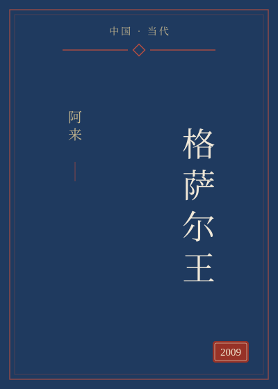
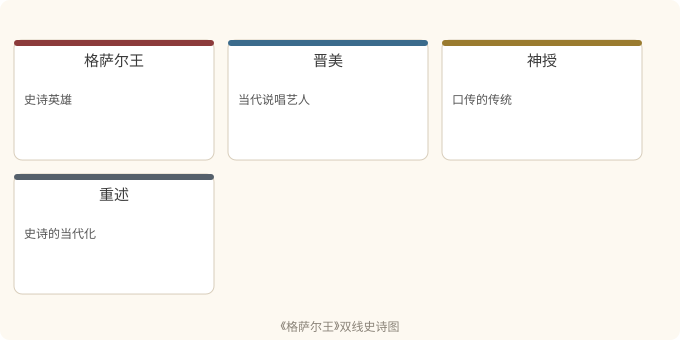

格萨尔王
一、基本信息
| 作者 | 阿来 |
|---|---|
| 成书/出版 | 出版年份待核（中国作家网官方名单 C012：阿来 major_works 载'空山、格萨尔王'——2009年说通说待核） 历届茅盾文学奖获奖作品一览（中国作家网）（官方文学机构） |
| 国别/地区 | 中国 |
| 时代 | 现当代 · 当代 |
| 体裁 | 长篇小说 |
| 语言 | 汉语（白话·藏地史诗） |

《格萨尔王》双线史诗图（主题·结构图）
二、创作背景
中国作家网官方名单页（C012）：阿来 major_works 载'空山、格萨尔王'（C012 作者页定位，详见 chenailuodi 条核对）。
题材（通说待核）：重述藏族史诗《格萨尔王传》——说唱艺人晋美与格萨尔王的双线。
三、内容脉络
史诗重述：格萨尔王的降伏与传说；当代说唱艺人的'神授'（通说待核）。
四、主要人物表
| 人物 | 身份 | 说明 |
|---|---|---|
| 格萨尔王 | 史诗英雄 | （通说待核） |
| 晋美 | 说唱艺人 | 当代线（通说待核） |
五、主题与艺术特点
- 史诗的当代重述（通说待核）。
- '神授艺人'的口传传统（通说）。
- 藏文化的汉语转译（通说）。
六、影响与评论
- 中国作家网官方名单：阿来 major_works 谱系（C012 作者页口径）。
历届茅盾文学奖获奖作品一览（中国作家网）（官方文学机构） - 中国作家网官方名单：《尘埃落定》第五届茅奖（C012 作者级）。
历届茅盾文学奖获奖作品一览（中国作家网）（官方文学机构）
七、阅读建议
难点
- 藏族史诗知识。
- 双线结构。
- 《格萨尔王》（重庆出版社，通说待核）。
先《尘埃落定》后本作。
八、待核实
- 2009年重庆出版社初版核对。
- 晋美艺人与史诗人物对照待核。
- '神授艺人'现象的记载待核。
本页主要来源
阿来的其他收录作品：尘埃落定